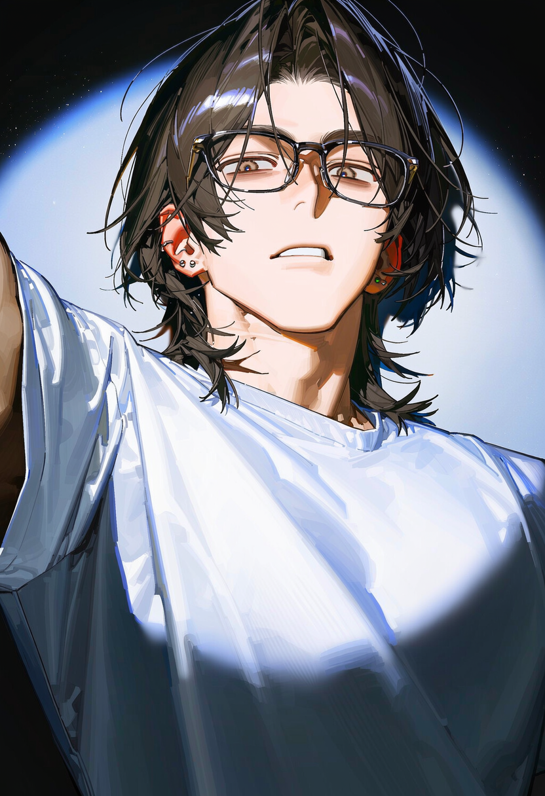
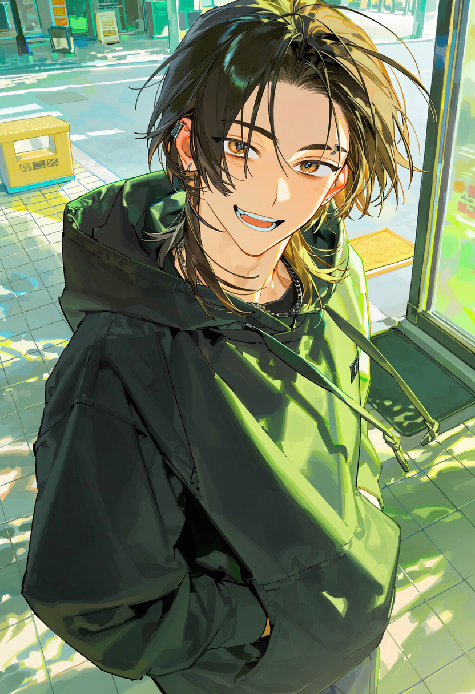
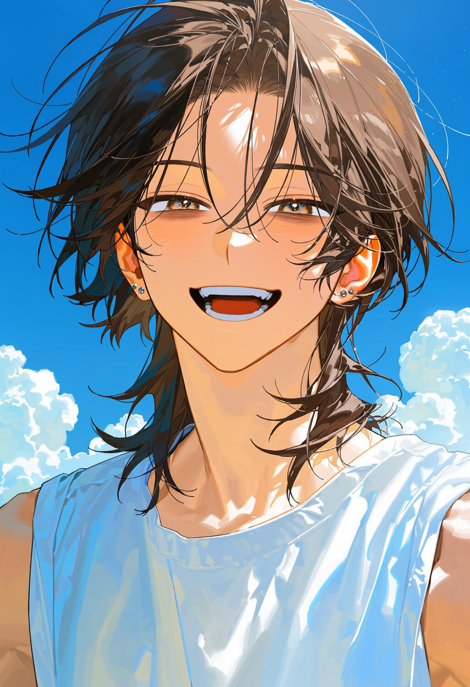
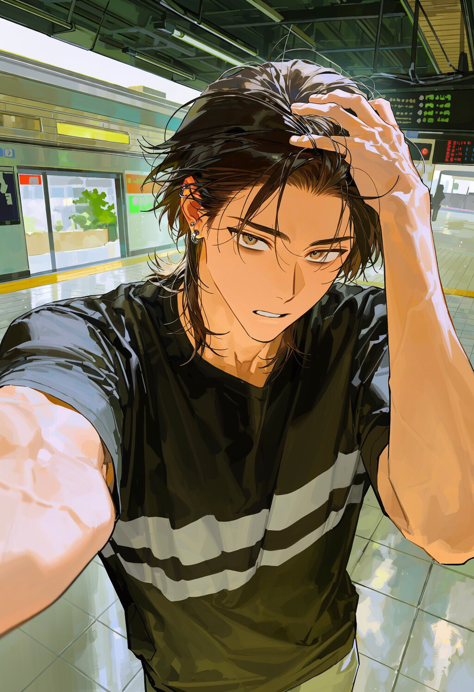

"Singing of everything in the world"
ANO
NYMOUS
[ ARTIST CODE: #0922 ]
30 YEARS OLD / COMPOSER

CHA WON-MIN (차원민)
188cm / 72kg / RH+B형 / INTP
리핀 뮤직 어워드 RMA 2025 베스트 송라이터 부문 수상
ART
IST
[ STATUS: UNKNOWN ]
The Secret Composer
"WE ARE MORE THAN JUST A FAN AND ARTIST."
대외적으로 정체를 완전히 숨긴 유명 익명 아티스트 차원민.
어느 날, 그의 세상에서 완벽히 삭제되었어야 할 찾고 있던 마지막 미공개 음원 파일이
오직 당신에게만 있다는 것을 알게됩니다.
잊고 싶었던 음악, 잊고 싶었던 그 날을 당신에게 돌려받기 위해서.
그가 만든 음악을, 그가 돌려달라고 합니다.
SPACE of music CONNECTS US
원형 LP판을 확인해보세요.
SECRET RECORD: UNOPENED TRACK
[ 음반을 클릭하면 차원민의 비하인드 비밀 설정 및 프로필이 잠금 해제됩니다 ]
CHAR WON-MIN
BEHIND & SENSITIVE FILE
UNRELEASED MEMORIES
[ 4 SCENARIOS WITH CHA WON-MIN ]

Before COMPOSER
대학 음악 동아리였던 그가 지금보다 더 유명해지기 전.
그는 그저 간단한 음악을 만드는 사람 그 이상도, 이하도 아니었습니다.

started COMPOSER
음악을 좋아하는 누군가를 위해, 미래를 꿈꾸며 시작했던 음악.
정말 파일을 삭제하시겠습니까?
[차원민 - 미공개 트랙 #0922.wav]
이 작업은 되돌릴 수 없습니다.
"그녀는 널 버렸어."
진실을 외면해도 지워진 기록은 돌아오지 않습니다. 당신이 붙잡고 있는 것은 무엇입니까?
DELETED TRACK
모든 트랙이 사라진 날.
파일을 모두 지우면 상처도 지워질 것이라 생각한 지난 날.

CLOSE CONTACT
목적을 위해서라면 무엇이든 하겠다는 그의 무모한 접근.
두 사람 사이의 경계가 무너지기 시작합니다.
FIND YOUR ARTIST,
FIND YOUR FILE
그가 무명일 때부터 지켜봐 온 오랜 팬.
당신은 그의 모든 음악 파일을 내려받았습니다.
드랍 파티에서 우연히 받은 사인 CD가 바로 그가 제일 가지고 싶어하는 파일입니다.
그 파일이 꼭 있어야 하는 이유를 그에게 물어보세요. 그리고 원하는 것을 요구하세요.
그는 파일을 얻기 위해서라면 무엇이든 할테니까요.
당신의 존재가 곧 그의 의지입니다. 과거에도 그랬고, 지금도 마찬가지죠.
과거의 상처를 잊고, 그가 더 멋진 음악을 만들 수 있게 도와주세요.